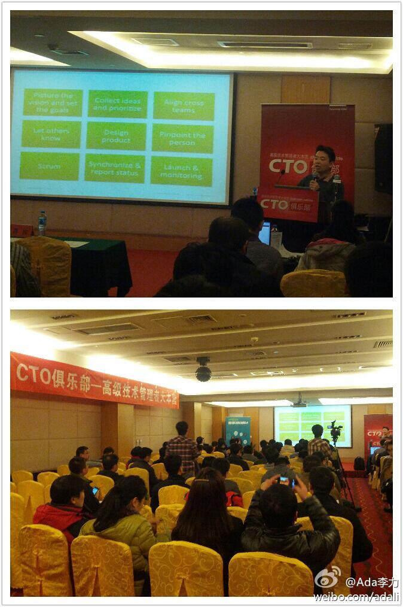

回复@_郭小姐:听说过此类的创业，还有懒汉互连，NTalk等。 //@_郭小姐:hibuzz就是聚合技术活动沙龙的平台。正如李力姐所说我们小众且不知名，但在创业前进的路上，我将勇敢且坚持，这就是真正的我，我是hibuzz 拔丝活动,我为自己代言。@Ada李力:社区领导人微群里有人负责很小众的社区，以前都没听说过，比如Hibuzz, Blendar.....
今天@CTO俱乐部 的主讲是@王淮Harry ，他介绍自己是“忽悠人群中最擅长技术的，技术人群中最擅长忽悠的”。这种句式可以套用在很多复合人才上。王淮进入正题前还做了两件事，一个是推荐自己写的书<打造FaceBook, 另一个是介绍自己的投资公司，并问在场参会者有多少在创业，几乎一半人举了手。 
帮转，又是在找老师。@asmcos智普教育:编程公园 求一名 正则表达式 老师。 在数周后做一次活动。。。python或者其他语言均可。 网页链接 @ZoomQuiet @limodou @程开源 @庄表伟 @Ada李力
#规则#朋友老公从北京某银行派驻到香港分行，刚去还没有当月工资收入，还要安家，按照北京的习惯，找公司借款，并找总经理签了字，但在财务部门就是领不了钱，理由是不合规，香港的财务审核很严格。后来是财务经理以私人名义借款给他。
#规则#之前当当网创始人李国庆，曾经批准公司借给员工治病钱二十万，遭到董事会反对。李国庆很不忿，还把这事儿发到微博上，很多人说他仗义，是好老板。我觉得这人有点二，他可以自己借钱给员工，但动用公司的钱要有说法和界限。员工因私事借款，治病如果可以借，买房可不可以借？孩子上学可不可以借？
#规则#我赞成慈善，但反对没有规则的慈善。我的观点是，如果要我捐赠，要满足两个条件：首先，这个事情是可信的；其次，捐款的用处是受到监督的，整个过程对捐款人是透明的。但国内的各种求助，严重缺乏第二条的自律。
回复@潘少宁_腾讯_LAMP人:有统一和透明的规定，并且对所有员工一视同仁。这样的公司福利，大家都很欢迎。 //@潘少宁_腾讯_LAMP人:腾讯 买房可以借哈。哈哈。无息贷款。30W。@Ada李力:#规则#之前当当网创始人李国庆，曾经批准公司借给员工治病钱二十万，遭到董事会反对。李国庆很不忿，还把这事儿发到微博上，很多人说他仗义，是好老板。我觉得这人有点二，他可以自己借钱给员工，但动用公司的钱要有说法和界限。员工因私事借款，治病如果可以借，买房可不可以借？孩子上学可不可以借？
回复@蓝海何晓阳:这种情况，公司帮助发起募捐，并为募捐做担保，是较适当的做法。 //@蓝海何晓阳:ADA，可能很多公司的创始人都不像大家想象的那么有钱。@Ada李力:#规则#之前当当网创始人李国庆，曾经批准公司借给员工治病钱二十万，遭到董事会反对。李国庆很不忿，还把这事儿发到微博上，很多人说他仗义，是好老板。我觉得这人有点二，他可以自己借钱给员工，但动用公司的钱要有说法和界限。员工因私事借款，治病如果可以借，买房可不可以借？孩子上学可不可以借？
新浪微博上有个“微公益”，网页链接 不知道效果如何？@Ada李力:#规则#我赞成慈善，但反对没有规则的慈善。我的观点是，如果要我捐赠，要满足两个条件：首先，这个事情是可信的；其次，捐款的用处是受到监督的，整个过程对捐款人是透明的。但国内的各种求助，严重缺乏第二条的自律。